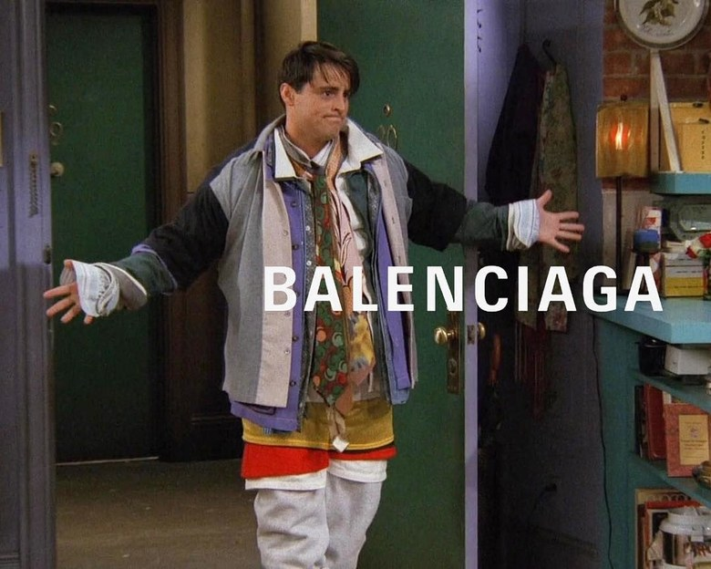

TENDENCIAS
Big-Jacket meme
Comenzó como una broma en instagram y pasó a ser presente dentro de las pasarelas en donde las y los grandes diseñadores comenzaron a implementarlar en sus líneas. Parece no encantarle a todos pero ¿Tú qué opinas?
La marca de los vestidos del verano quiere que cambies tu vestido de flores por este 'slip dress'
Ni siluetas wrap, ni detalles de volantes, ni botones centrales: este vestido satinado de jacquard en color champagne, con tirantes espagueti y con un discreto bordado floral se aleja bastante del clásico vestido francés de todos los veranos.
Stella McCartney se une a la moda de las calcetas con su nueva linea organica
Ni siluetas wrap, ni detalles de volantes, ni botones centrales: este vestido satinado de jacquard en color champagne, con tirantes espagueti y con un discreto bordado floral se aleja bastante del clásico vestido francés de todos los veranos.